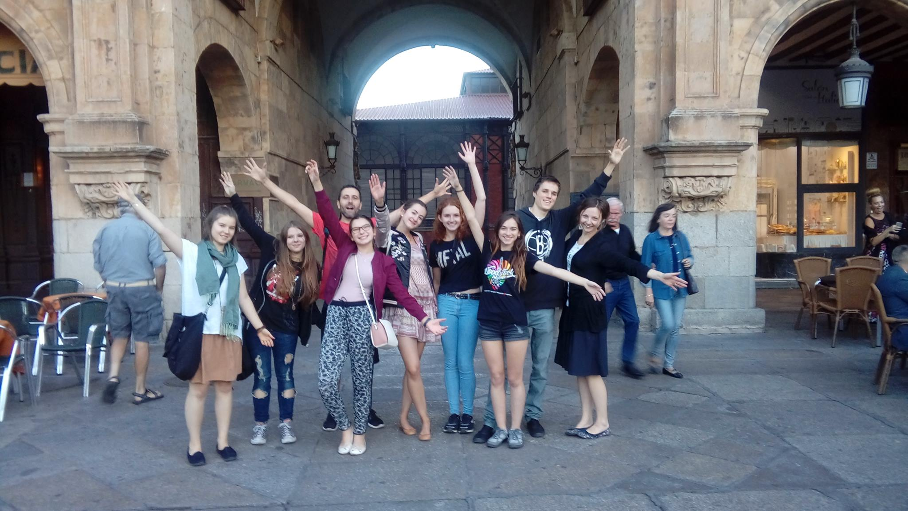

Gazeta ZSO nr II w Opolu
Numer 1/2016
Lekcje hiszpańskiego w Hiszpanii

Grupa ośmiu maturzystów uczących się języka hiszpańskiego na poziomie rozszerzonym pojechała na obóz językowo-kulturowy do Salamanki w Hiszpanii. Uczniowie spędzili tam tydzień, od 26 września do 3 października pod opieką pani Anny Andrzejewskiej.
- Podczas naszej wyprawy poznaliśmy kulturę hiszpańską od podszewki. Mieszkaliśmy u miejscowych rodzin i rozmawialiśmy z nimi każdego dnia, a także z innymi lokatorami, którzy przybyli do Salamanki z różnych stron świata. Dzięki temu mogliśmy przełamać nasze bariery językowe. Nic tak nie polepsza umiejętności komunikowania się jak dialogi z rodowitymi Hiszpanami! Każdego dnia mogliśmy wykorzystać wiedzę zdobytą na porannych lekcjach intensywnego kursu językowego. Popołudniami odkrywaliśmy uroki i najpiękniejsze zakątki Salamanki. Zwiedziliśmy cuda architektury – katedry (Salamanka ma dwie), Uniwersytet, Casa de Conchas, Most Rzymski czy klasztor dominikański św. Szczepana. Poznaliśmy sztukę art deco w Casa Lis, a w urokliwej kawiarence zjedliśmy chocolate con churros - słynny hiszpański deser. Nauczyliśmy się podstawowych kroków tańca sevillanas oraz salsy. Jednego wieczoru wybraliśmy się do słynnych tapas barów, gdzie spróbowaliśmy specjałów kuchni hiszpańskiej, innego bawiliśmy się na prawdziwej fieście. Jednak najprzyjemniejszą częścią każdego dnia były chwile spędzone w sercu Salamanki - na Plaza Mayor, gdzie można było odpocząć na rozgrzanych kamieniach, napić się aromatycznej kawy, zjeść najlepsze lody w mieście, czy po prostu relaksować się w przyjaznym otoczeniu. Nie wiemy dlaczego to miejsce jest tak magiczne, może to słynny hiszpański temperament, otwartość mieszkańców lub głośne śmiechy szalonych studentów? Naszą podróż zakończyliśmy dwugodzinnym spacerem po Madrycie, tuż przed odlotem.
Oprócz wiedzy, którą zdobyliśmy w szkole językowej i którą mogliśmy natychmiast wykorzystać w praktyce, poznaliśmy historię cennych zabytków i dzięki temu odkryliśmy bogactwo kultury hiszpańskiej. To doświadczenie poszerzyło nasze horyzonty. Właśnie dlatego warto podróżować i uczyć się języków! - podsumowuje wyjazd Hanna Szarzewicz z kl. III H.
ul. Pułaskiego 3
45-048 Opole
tel. 077 45 422 86
fax 077 02 18 87
e-mail:
bez.tytulu@o2.pl
Ola Orłowska
DTP
Michał Woś
Opiekun
mgr Lucyna Rudnik
Ola Orłowska, Ania Cichy, Dagmara Cioska, Julia Nowicka, Julia Marcinów, Hania Szarzewicz, Michał Woś, Bartek Lipnicki, Jonasz Mularz, Paweł Kubacki, Mateusz Pietruszyński, Mateusz Orlik